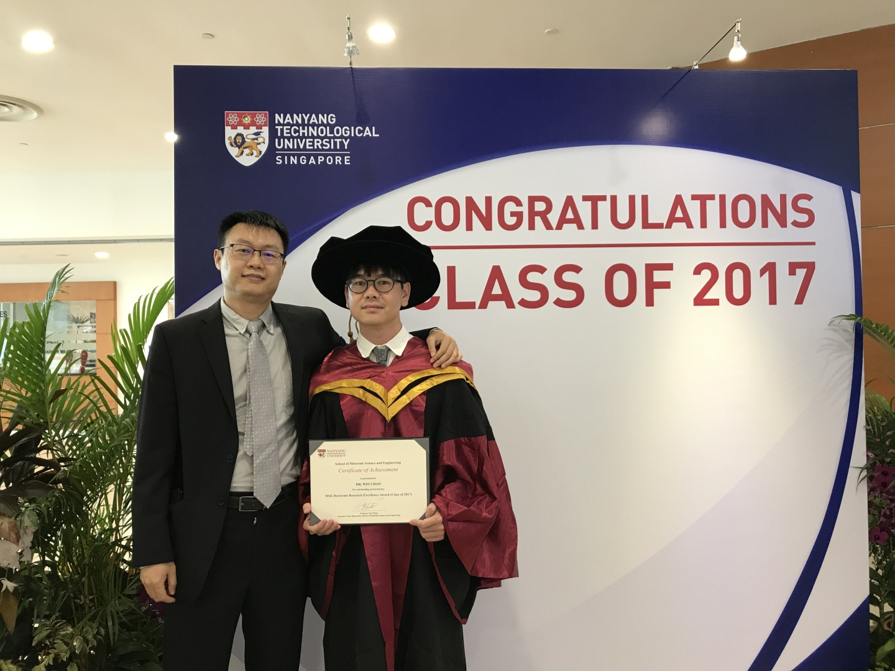
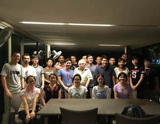
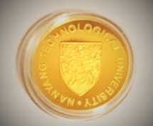
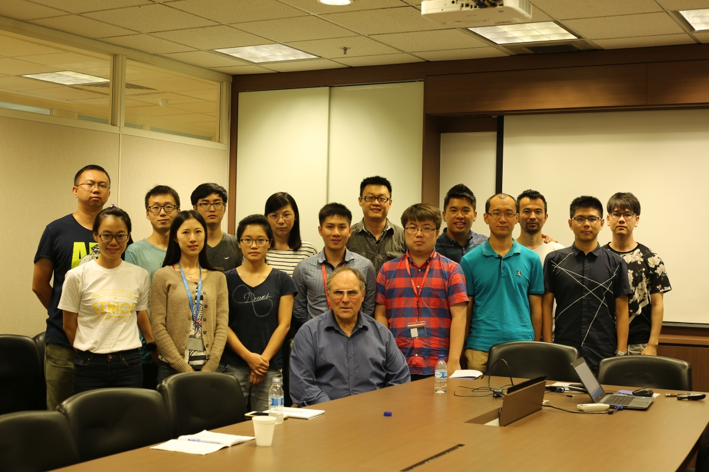

2018.07.31 - Shengnan is awarded MSE Doctorate Research Excellence Award 2018. Congrats!
2018.07.09 - Our research on automobile catalysts has been highlighted in 4th CleanEnviro Summit Singapore Innovation Pavilion. Welcome to our booth at Marina Bay Sand Expo Centre.
2018.01.24 - Congrats to Ying and Chao for their work accepted by ACS Applied Energy Materials: An Operando Investigation of Mn3O4+δ Co-catalyst on Fe2O3 Photoanode: Mn-Valency Determined Enhancement at Varied Potentials. This work revealed that the contribution of co-catalyst can be varied with applied potential change.
2018.01.22 - Congrats to Tam for passing the PhD oral exam.
2018.01.12 - Congrats to Shengnan for passing the PhD oral exam.
2017.12.11 - Congrats to Ye for her work accepted by ACS Catalysis: Revealing the Dominant Chemistry for Oxygen Reduction Reaction on Small Oxide Nanoparticles. In this work, spinel MnxFe2-xO4 oxide nanoparticles were investigated for ORR. The difference in performance was observed when x was varied. Both bulk and surface chemistry of these nanoparticles were investigated. This work shows that at a small particle size, the bulk chemistry of oxides may not be the descriptor for their electrochemical properties. Due to the significantly high surface/bulk ratio, the surface chemistry has to be carefully characterized to interpret the activities of oxide nanoparticles.
2017.12.05 - Congrats to Ye and Shengnan for their work accepted by Advanced Materials: Superexchange effects on oxygen reduction activity of edge-sharing [CoxMn1-xO6] octahedra in spinel oxide
2017.12.04 - Congrats to Yan and Shengnan for their work accepted by Chemistry of Materials: Tailoring the Co 3d-O 2p Covalency in LaCoO3 by Fe Substitution to Promote Oxygen Evolution Reaction
2017.11.27 - Congrats to Linghui and Paul for their invited review article accepted by Small: Understanding Fundamentals and Reaction Mechanisms of Electrode Materials for Na-Ion Batteries
2017.10.16 - Farewell lunch with Paul. Good luck and best wishes to Paul!
2017.10.12 - Congratulations to Duanyan for passing the QE!
2017.09.21 - We had a group dinner to greet new members and celebrate promotion! Best wishes to EML!
The work about Pd for alkaline HER by Hanbin and Chao (published on Adv. Energy Mater.) has been highlighted in Cailiaoniu (in Chinese).
2017.07 - Chao is awarded with Research Excellence Award for the MSE Postgraduate Awards 2017. Congrats!

ECS Singapore Section is established. The 1st Singapore ECS international Symposium on Energy Materials will be held on Dec 6th - 9th, 2017 in Singapore. See the symposium website for details.
2017.04.10 - Prof. Gregory Jerkiewicz (Queen's University, Canada) visited us and gave MSE Colloquium@NTU.
2017.03.05 - Chao's work about OER and ORR on transition spinel oxides is accepted by Adv. Mater. The work figured out a correlation between catalytic activities and cations in octahedral sites, indicating the dominant role of octahedral sites in determining the oxygen electrocatalysis of spinel oxides. We also recommend our another paper on Chem. Mater. (2016, 28, 4129–4133), which shows the critical role of octahedral sites in determining the pseudocapacitance of spinel ferrites. We will have more interesting results about spinels coming out.
2017.03.01 - Dr.Stijin Mertens(Vienna University of Technology) visited us.
2017.03. - Dr. Xiao REN and Dr. Hebing HU joined us as Research Fellows. Welcome!
2017.02. - Shengnan's recent C3 alcohol oxidation work has been published on Electrochemica Acta. We would like to highlight his systematic study on C1-C3 alcohol oxidation. These works have been published in the past three years in Electrochemica Acta (2017, 228, 183-194 & 2015, 165, 56–66) and The Journal of Electrochemistry Society (2016, 163, H99–H104). His work may be interesting to the electrosynthesis of value-added small molecules as well as PEM fuel cell development.
2017.01.03 - We had a Group BBQ to greet new members and bid farewell to our colleagues who are leaving soon.
2016.12.16 - Prof. Shirley Meng(University of California San Diego) visited us.
2016.12.15 - Prof. Shao Zongping(Curtin University) visited us.
2016.12.14 - Prof. Hye Ryung Byon (Korean Advanced Institute of Science and Technology) visited us.
Paul won the best poster prize in 9th Singapore International Chemistry Conference (SICC-9). Congratulations!
Happy wedding, Paul! Perfect match embrace a perfect future. Here's best wishing you both a lifetime of happiness.
Paul's research article on N-doped SnO2 was accepted by Advanced Materials.
Yi and Paul's review article on composite electrodes was accepted by Advanced Energy Materials.
Tam's work on organic additives for the electrolyte of vanadium redox flow battery was published on Journal of Power Sources. The work proposed a method for screening the effective additives.
Hualiang's work on carbon composites for controlable electromagnetic wave absorption has been published on Carbon.
Dr. Xu gave an invited lecture in 4th International Symposium on Electrocatalysis ECAT2016, Sept 11-14, 2016 Japan.
Tam's work has been highlighted as the front cover of Electrocatalysis, Vol 7, No 5!
2016.08.12 - We had group BBQ to greet our freshmen and bid farewell to our colleagues who are to leave us soon. Warm welcome and best wishes! Also, with our honored guest, Prof. Günther Scherer.

2016.08.01 - Ms. Yan Duan has been awarded the NSL Ltd Gold Medal for her excellent achievements of undergraduate study. Congratulations!

2016.07.12 - Prof. Alexis Bell (University of California, Berkeley) visited us.

2016.07.12 - Ms. Doria Ting Wang joined us as PhD students. Welcome!
2016.07.08 - Prof. Marc Koper (Leiden University) and Prof. Ifan Stephen (DTU) visited us.
2016.07.06 - Prof. Schinichiro Nakamura (RIKEN), Prof. Katsushi Fujii (Univ. Kitakyushu and RIKEN), Prof. Yasuhiko Miwata (RIKEN and TOYOTA), Mr. Genichi Tsuzawa (Director RIKEN Singapore office), and Mr. Takuo Ohata (RIKEN) visited us.
2016.07.05 - Mr. Tianze Wu and Ms. Haiyan Li joined us as PhD students. Welcome!
2016.07.05 - Mr. Murat Yesbolat from DTU joined us as an exchange student. Welcome!
2016.07.05 - Hanbin, Shengnan, Ye, Chao, Tam, and Paul presented their posters in the ICEI 2016.
2016.06.30 - Mr. Tam D. Nguyen's paper has been accepted by Electrocatalysis. Congratulations!
2016.06.23 - We begin to use new homepage now!
2016.06.15 - Dr. Anu Prathap won the 1st prize in the poster awards of ISPAC. Cheers!
2016.06.13 - Mr. Wei Chao's paper has been accepted by Chemistry of Materials. Congratulations!
2016.06.14 - Dr. Chencheng Dai from Cambridge joined the group. Welcome!
2016.04.26 - Prof. Xu emerged as winner of the Teacher of the Year Award 2016. Congratulations!
Mr. Hualiang Lv from NUAA joined the group as an exchange student. Welcome!
Dr. Libo Sun joined the group on 20 Oct, 2015. Welcome!
Mr. Hui Zhao from Jiangnan University joined us as an exchange student. Welcome!
Dr. Liao's review article "Surface segregation in bimetallic nanoparticles: a critical issue in electrocatalyst engineering" is highlighted as Cover in Small.
We had a group meeting/Christmas party on 23 Dec, 2014.
Dr. Ying Wang from University of Oxfd joined us. Welcome!
Dr. Hongwei Xi joined us in Sept. 2014. Welcome!
Dr. Ying Liu from South China University of Technology joined us in Aug. 2014. Welcome!
Dr. Hanbin Liao from Peking University joined the group in Aug. 2014. Welcome!
Ms. Jenny Zhou Ye and Mr. Gaw Sheng Long joined the group in Aug. 2014. Welcome!
Dr. Ioan Iulius E. Markovits from Technische Universität München joined us in Jul. 2014. Welcome!
Dr. Anu Prathap M.U. from Indian Institute of Technology Ropar joined the group in Aug. 2014. Welcome!
Dr. Zhao Yi from Fujian Institute of Research on the Structure of Matter, Chinese Academic Sciences joined our group in Feb. 2014. Welcome!
Dr. Hu nantao from Shanghai Jiaotong University joined our group as a Visiting Scholar in Feb. 2014. Welcome!
Prof. Jin Zhang from Peking University visited our lab at Jan. 2014. A fantastic painting was given by his son. Thank you, LeLe!
Prof. Michael Therien and Prof. Jie Liu from Duke University visited our school and group at Jan. 2014.
Prof. Shouheng Sun from Brown University visited our school and group at Dec. 2013.
Dr. Yu Linghui from Max Planck Institute of Colloids and Interfaces / University of Potsdam joined the group at Sep. 2013. Welcome!
Dr. Jane Zhao Jian from Queensland University of Technology joined the group at Sep. 2013. Welcome!
Mr. Wei Chao presented two posters about his work on supercapacitor and CO2 reduction on the 15th Asian Chemical Congress, Aug. 19-23. 2013. Congratulations!
Mr. Paul Wang Luyuan, Mr. Sun Shengnan, Mr. Nguyen Duy Tam, and Ms. Vidya N Chamundeswari joined the group at Aug. 2013. Welcome!
Dr. Zhang Guoqing joined the group at Feb. 2013. Welcome!
Prof. Yang Shao-Horn from MIT visited MSE and presented us a seminar "Enabling Efficient Oxygen Electrocatalysis for Electrochemical Energy Storage" at 28 Dec. 2012.
Xu will be giving a lecture "Kitchen Chemistry Meets Nanotechnology" and a lab demo to JC students (NTU Outreach Activity) at 26 Nov. 2012.
Xu gave a seminar "Engineering Nanoparticle Catalysts for Energy Applications" in MSE at 19 Oct. 2012.
Xu joined the group at Oct. 2012 and a Start-up grant was received.
Mr. Wei Chao from SiChuan University joined the group at Oct. 2012.
Press articles
Dr. Linghui Yu's work on FeOOH for Li ion battery anode is highlighted by Materials Views China: http://www.materialsviewschina.com/2014/12/high-performance-anode-material-for-lithium-ion-batteries-beta-feooh/, Dec 19, 2014
Dr. Yi Zhao's work on Li-S battery is highlighted by Materials Views China: http://www.materialsviewschina.com/2014/08/guan-zhong-guan-fu-he-tan-na-mi-cai-liao-you-xiao-ti-gao-li-liu-dian-chi-xing-neng-2/, Aug 25, 2014